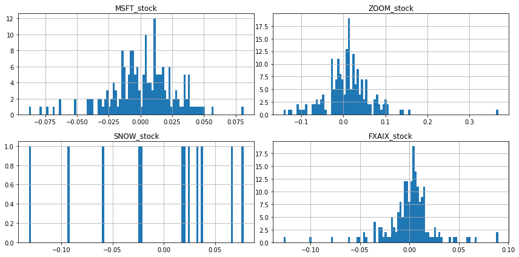

Stock Market and Portfolio Anaylsis Tech Stocks and the S&P 500 in 2020 with pandas_datareader and writing to at sqlite database¶
This post includes code adapted from python for finance and trading algorithms udemy course and python for finance and trading algorithms udemy course notebooks and the documentation here
import pandas as pd
import numpy as np
import pandas_datareader.data as web
import datetime
import matplotlib.pyplot as plt
%matplotlib inline
# # start = datetime.datetime(2016, 1, 1)
# # end = datetime.datetime(2017, 5, 17)
# start = datetime.datetime(2010, 1, 1)
# end = datetime.datetime(2020, 1, 1)
start = pd.to_datetime('2020-01-01')
end = pd.to_datetime('today')
FXAIX_stock = web.DataReader('FXAIX', 'yahoo', start, end)
FXAIX_stock.head()
MSFT_stock = web.DataReader('MSFT', 'yahoo', start, end)
MSFT_stock.head()
ZOOM_stock = web.DataReader('ZM', 'yahoo', start, end)
ZOOM_stock.head()
SNOW_stock = web.DataReader('SNOW', 'yahoo', start, end)
SNOW_stock.head()
fig = plt.figure(figsize=(12, 6))
plt.title('Open')
MSFT_stock['Open'].plot(label='Microsoft')
ZOOM_stock['Open'].plot(label='Zoom')
SNOW_stock['Open'].plot(label='Snowflake')
FXAIX_stock['Open'].plot(label='SNP_500')
plt.legend()
fig = plt.figure(figsize=(12, 6))
plt.title('Volume')
MSFT_stock['Volume'].plot(label='Microsoft')
ZOOM_stock['Volume'].plot(label='Zoom')
SNOW_stock['Volume'].plot(label='Snowflake')
FXAIX_stock['Volume'].plot(label='SNP_500')
plt.legend()
<matplotlib.legend.Legend at 0x7fae549b8ba8>


FXAIX_stock = web.DataReader('FXAIX', 'yahoo', start, end)
FXAIX_stock.head()
MSFT_stock = web.DataReader('MSFT', 'yahoo', start, end)
MSFT_stock.head()
ZOOM_stock = web.DataReader('ZM', 'yahoo', start, end)
ZOOM_stock.head()
SNOW_stock = web.DataReader('SNOW', 'yahoo', start, end)
SNOW_stock.head()
| High | Low | Open | Close | Volume | Adj Close | |
|---|---|---|---|---|---|---|
| Date | ||||||
| 2020-09-16 | 319.0 | 231.110001 | 245.000000 | 253.929993 | 36099700 | 253.929993 |
| 2020-09-17 | 241.5 | 215.240005 | 230.759995 | 227.539993 | 11907500 | 227.539993 |
| 2020-09-18 | 249.0 | 218.589996 | 235.000000 | 240.000000 | 7475400 | 240.000000 |
| 2020-09-21 | 241.5 | 218.600006 | 230.000000 | 228.850006 | 5524900 | 228.850006 |
| 2020-09-22 | 239.0 | 225.149994 | 238.500000 | 235.160004 | 3889100 | 235.160004 |
stocks = pd.concat([MSFT_stock['Open'], ZOOM_stock['Open'], SNOW_stock['Open'], FXAIX_stock['Open']],
axis = 1)
stocks
| Open | Open | Open | Open | |
|---|---|---|---|---|
| Date | ||||
| 2020-01-02 | 158.779999 | 68.800003 | NaN | 112.980003 |
| 2020-01-03 | 158.320007 | 67.620003 | NaN | 112.190002 |
| 2020-01-06 | 157.080002 | 66.629997 | NaN | 112.589996 |
| 2020-01-07 | 159.320007 | 70.290001 | NaN | 112.290001 |
| 2020-01-08 | 158.929993 | 71.809998 | NaN | 112.839996 |
| ... | ... | ... | ... | ... |
| 2020-09-28 | 210.880005 | 502.410004 | 235.929993 | 116.650002 |
| 2020-09-29 | 209.350006 | 488.130005 | 255.000000 | 116.099998 |
| 2020-09-30 | 207.729996 | 464.209991 | 261.500000 | 117.070000 |
| 2020-10-01 | 213.490005 | 477.000000 | 255.250000 | 117.699997 |
| 2020-10-02 | 208.000000 | 485.005005 | 232.440002 | 116.120003 |
191 rows × 4 columns
stocks.columns = ['MSFT_stock','ZOOM_stock','SNOW_stock','FXAIX_stock']
stocks
| MSFT_stock | ZOOM_stock | SNOW_stock | FXAIX_stock | |
|---|---|---|---|---|
| Date | ||||
| 2020-01-02 | 158.779999 | 68.800003 | NaN | 112.980003 |
| 2020-01-03 | 158.320007 | 67.620003 | NaN | 112.190002 |
| 2020-01-06 | 157.080002 | 66.629997 | NaN | 112.589996 |
| 2020-01-07 | 159.320007 | 70.290001 | NaN | 112.290001 |
| 2020-01-08 | 158.929993 | 71.809998 | NaN | 112.839996 |
| ... | ... | ... | ... | ... |
| 2020-09-28 | 210.880005 | 502.410004 | 235.929993 | 116.650002 |
| 2020-09-29 | 209.350006 | 488.130005 | 255.000000 | 116.099998 |
| 2020-09-30 | 207.729996 | 464.209991 | 261.500000 | 117.070000 |
| 2020-10-01 | 213.490005 | 477.000000 | 255.250000 | 117.699997 |
| 2020-10-02 | 208.000000 | 485.005005 | 232.440002 | 116.120003 |
191 rows × 4 columns
mean_daily_ret = stocks.pct_change(1).mean()
mean_daily_ret
MSFT_stock 0.001751
ZOOM_stock 0.011973
SNOW_stock -0.002546
FXAIX_stock 0.000440
dtype: float64
stocks.pct_change(1).corr()
| MSFT_stock | ZOOM_stock | SNOW_stock | FXAIX_stock | |
|---|---|---|---|---|
| MSFT_stock | 1.000000 | 0.209041 | 0.661827 | 0.382807 |
| ZOOM_stock | 0.209041 | 1.000000 | 0.095052 | 0.127526 |
| SNOW_stock | 0.661827 | 0.095052 | 1.000000 | 0.292117 |
| FXAIX_stock | 0.382807 | 0.127526 | 0.292117 | 1.000000 |
stock_normed = stocks/stocks.iloc[0]
stock_normed.plot()
<matplotlib.axes._subplots.AxesSubplot at 0x7fae54a74a90>

stock_daily_ret = stocks.pct_change(1)
stock_daily_ret.head()
| MSFT_stock | ZOOM_stock | SNOW_stock | FXAIX_stock | |
|---|---|---|---|---|
| Date | ||||
| 2020-01-02 | NaN | NaN | NaN | NaN |
| 2020-01-03 | -0.002897 | -0.017151 | NaN | -0.006992 |
| 2020-01-06 | -0.007832 | -0.014641 | NaN | 0.003565 |
| 2020-01-07 | 0.014260 | 0.054930 | NaN | -0.002664 |
| 2020-01-08 | -0.002448 | 0.021625 | NaN | 0.004898 |
log_ret = np.log(stocks / stocks.shift(1))
log_ret.head()
| MSFT_stock | ZOOM_stock | SNOW_stock | FXAIX_stock | |
|---|---|---|---|---|
| Date | ||||
| 2020-01-02 | NaN | NaN | NaN | NaN |
| 2020-01-03 | -0.002901 | -0.017300 | NaN | -0.007017 |
| 2020-01-06 | -0.007863 | -0.014749 | NaN | 0.003559 |
| 2020-01-07 | 0.014160 | 0.053475 | NaN | -0.002668 |
| 2020-01-08 | -0.002451 | 0.021394 | NaN | 0.004886 |
log_ret.hist(bins = 100,
figsize = (12, 6));
plt.tight_layout()

log_ret.describe().transpose()
| count | mean | std | min | 25% | 50% | 75% | max | |
|---|---|---|---|---|---|---|---|---|
| MSFT_stock | 190.0 | 0.001421 | 0.025752 | -0.087821 | -0.012115 | 0.004000 | 0.016980 | 0.081248 |
| ZOOM_stock | 190.0 | 0.010279 | 0.056461 | -0.142569 | -0.017014 | 0.011119 | 0.035968 | 0.368600 |
| SNOW_stock | 12.0 | -0.004386 | 0.063753 | -0.131433 | -0.033113 | 0.019477 | 0.034320 | 0.077728 |
| FXAIX_stock | 190.0 | 0.000144 | 0.024461 | -0.127150 | -0.007774 | 0.002806 | 0.010082 | 0.089894 |
log_ret.mean() * 252
MSFT_stock 0.358130
ZOOM_stock 2.590236
SNOW_stock -1.105148
FXAIX_stock 0.036359
dtype: float64
log_ret.cov()
| MSFT_stock | ZOOM_stock | SNOW_stock | FXAIX_stock | |
|---|---|---|---|---|
| MSFT_stock | 0.000663 | 0.000323 | 0.001291 | 0.000245 |
| ZOOM_stock | 0.000323 | 0.003188 | 0.000290 | 0.000184 |
| SNOW_stock | 0.001291 | 0.000290 | 0.004064 | 0.000231 |
| FXAIX_stock | 0.000245 | 0.000184 | 0.000231 | 0.000598 |
# Set seed (optional)
np.random.seed(101)
# Stock Columns
print('Stocks')
print(stocks.columns)
print('\n')
# Create Random Weights
print('Creating Random Weights')
weights = np.array(np.random.random(4))
print(weights)
print('\n')
# Rebalance Weights
print('Rebalance to sum to 1.0')
weights = weights / np.sum(weights)
print(weights)
print('\n')
# Expected Return
print('Expected Portfolio Return')
exp_ret = np.sum(log_ret.mean() * weights) *252
print(exp_ret)
print('\n')
# Expected Variance
print('Expected Volatility')
exp_vol = np.sqrt(np.dot(weights.T, np.dot(log_ret.cov() * 252, weights)))
print(exp_vol)
print('\n')
# Sharpe Ratio
SR = exp_ret/exp_vol
print('Sharpe Ratio')
print(SR)
Stocks
Index(['MSFT_stock', 'ZOOM_stock', 'SNOW_stock', 'FXAIX_stock'], dtype='object')
Creating Random Weights
[0.51639863 0.57066759 0.02847423 0.17152166]
Rebalance to sum to 1.0
[0.40122278 0.44338777 0.02212343 0.13326603]
Expected Portfolio Return
1.272564336318203
Expected Volatility
0.4864366288684257
Sharpe Ratio
2.6160948020680697
num_ports = 15000
all_weights = np.zeros((num_ports, len(stocks.columns)))
ret_arr = np.zeros(num_ports)
vol_arr = np.zeros(num_ports)
sharpe_arr = np.zeros(num_ports)
for ind in range(num_ports):
# Create Random Weights
weights = np.array(np.random.random(4))
# Rebalance Weights
weights = weights / np.sum(weights)
# Save Weights
all_weights[ind,:] = weights
# Expected Return
ret_arr[ind] = np.sum((log_ret.mean() * weights) *252)
# Expected Variance
vol_arr[ind] = np.sqrt(np.dot(weights.T, np.dot(log_ret.cov() * 252, weights)))
# Sharpe Ratio
sharpe_arr[ind] = ret_arr[ind] / vol_arr[ind]
sharpe_arr.max()
2.8667995807841824
sharpe_arr.argmax()
5483
all_weights[10619,:]
array([5.06395348e-01, 4.67772019e-04, 2.64242193e-01, 2.28894687e-01])
max_sr_ret = ret_arr[1419]
max_sr_vol = vol_arr[1419]
plt.figure(figsize = (12, 8))
plt.scatter(vol_arr,
ret_arr,
c = sharpe_arr,
cmap = 'plasma')
plt.colorbar(label = 'Sharpe Ratio')
plt.xlabel('Volatility')
plt.ylabel('Return')
# Add red dot for max SR
plt.scatter(max_sr_vol,
max_sr_ret,
c = 'red',
s = 50,
edgecolors = 'black')
<matplotlib.collections.PathCollection at 0x7fae54366048>

def get_ret_vol_sr(weights):
"""
Takes in weights, returns array or return,volatility, sharpe ratio
"""
weights = np.array(weights)
ret = np.sum(log_ret.mean() * weights) * 252
vol = np.sqrt(np.dot(weights.T, np.dot(log_ret.cov() * 252, weights)))
sr = ret/vol
return np.array([ret, vol, sr])
from scipy.optimize import minimize
import numpy as np
def neg_sharpe(weights):
return get_ret_vol_sr(weights)[2] * -1
# Contraints
def check_sum(weights):
'''
Returns 0 if sum of weights is 1.0
'''
return np.sum(weights) - 1
# By convention of minimize function it should be a function that returns zero for conditions
cons = ({'type' : 'eq', 'fun': check_sum})
# 0-1 bounds for each weight
bounds = ((0, 1), (0, 1), (0, 1), (0, 1))
# Initial Guess (equal distribution)
init_guess = [0.25, 0.25, 0.25, 0.25]
# Sequential Least Squares
opt_results = minimize(neg_sharpe,
init_guess,
method = 'SLSQP',
bounds = bounds,
constraints = cons)
opt_results
fun: -2.8998675936504807
jac: array([-3.57061625e-04, 6.75618649e-05, 1.98669076e+00, 1.90789163e-01])
message: 'Optimization terminated successfully.'
nfev: 42
nit: 7
njev: 7
status: 0
success: True
x: array([1.59222977e-01, 8.40777023e-01, 7.68699340e-16, 0.00000000e+00])
opt_results.x
get_ret_vol_sr(opt_results.x)
array([2.23483308, 0.77066728, 2.89986759])
frontier_y = np.linspace(0, 0.3, 100)
def minimize_volatility(weights):
return get_ret_vol_sr(weights)[1]
frontier_volatility = []
for possible_return in frontier_y:
# function for return
cons = ({'type':'eq','fun': check_sum},
{'type':'eq','fun': lambda w: get_ret_vol_sr(w)[0] - possible_return})
result = minimize(minimize_volatility,
init_guess,
method = 'SLSQP',
bounds = bounds,
constraints = cons)
frontier_volatility.append(result['fun'])
plt.figure(figsize = (12, 8))
plt.scatter(vol_arr,
ret_arr,
c = sharpe_arr,
cmap = 'plasma')
plt.colorbar(label = 'Sharpe Ratio')
plt.xlabel('Volatility')
plt.ylabel('Return')
# Add frontier line
plt.plot(frontier_volatility,
frontier_y,
'g--',
linewidth = 3)
[<matplotlib.lines.Line2D at 0x7fae542ed9e8>]

stocks['FXAIX_stock'].plot(figsize = (12, 8))
plt.title('Total S&P 500 in 2020 Value')
Text(0.5, 1.0, 'Total S&P 500 in 2020 Value')

import sqlalchemy as db
from sqlalchemy import create_engine
import sqlite3
import pandas as pd
stocks
| MSFT_stock | ZOOM_stock | SNOW_stock | FXAIX_stock | |
|---|---|---|---|---|
| Date | ||||
| 2020-01-02 | 158.779999 | 68.800003 | NaN | 112.980003 |
| 2020-01-03 | 158.320007 | 67.620003 | NaN | 112.190002 |
| 2020-01-06 | 157.080002 | 66.629997 | NaN | 112.589996 |
| 2020-01-07 | 159.320007 | 70.290001 | NaN | 112.290001 |
| 2020-01-08 | 158.929993 | 71.809998 | NaN | 112.839996 |
| ... | ... | ... | ... | ... |
| 2020-09-28 | 210.880005 | 502.410004 | 235.929993 | 116.650002 |
| 2020-09-29 | 209.350006 | 488.130005 | 255.000000 | 116.099998 |
| 2020-09-30 | 207.729996 | 464.209991 | 261.500000 | 117.070000 |
| 2020-10-01 | 213.490005 | 477.000000 | 255.250000 | 117.699997 |
| 2020-10-02 | 208.000000 | 485.005005 | 232.440002 | 116.120003 |
191 rows × 4 columns
engine = db.create_engine('sqlite:///stocks.sqlite')
connection = engine.connect()
metadata = db.MetaData()
stocks.to_sql('stocks', con=engine, if_exists='append', index=True)
engine.execute("SELECT * FROM stocks LIMIT 10").fetchall()
[(158.77999877929688, 68.80000305175781, None, 112.9800033569336),
(158.32000732421875, 67.62000274658203, None, 112.19000244140625),
(157.0800018310547, 66.62999725341797, None, 112.58999633789062),
(159.32000732421875, 70.29000091552734, None, 112.29000091552734),
(158.92999267578125, 71.80999755859375, None, 112.83999633789062),
(161.83999633789062, 73.98999786376953, None, 113.62000274658203),
(162.82000732421875, 73.08000183105469, None, 113.30000305175781),
(161.75999450683594, 73.88999938964844, None, 114.08999633789062),
(163.38999938964844, 74.31999969482422, None, 113.93000030517578),
(162.6199951171875, 73.27999877929688, None, 114.13999938964844)]
engine.execute("SELECT FXAIX_stock FROM stocks LIMIT 10").fetchall()
[(112.9800033569336,),
(112.19000244140625,),
(112.58999633789062,),
(112.29000091552734,),
(112.83999633789062,),
(113.62000274658203,),
(113.30000305175781,),
(114.08999633789062,),
(113.93000030517578,),
(114.13999938964844,)]
# df = pd.DataFrame({'name' : ['User 1', 'User 2', 'User 3']})
# df
# df.to_sql('users', con=engine)
# engine.execute("SELECT * FROM users").fetchall()